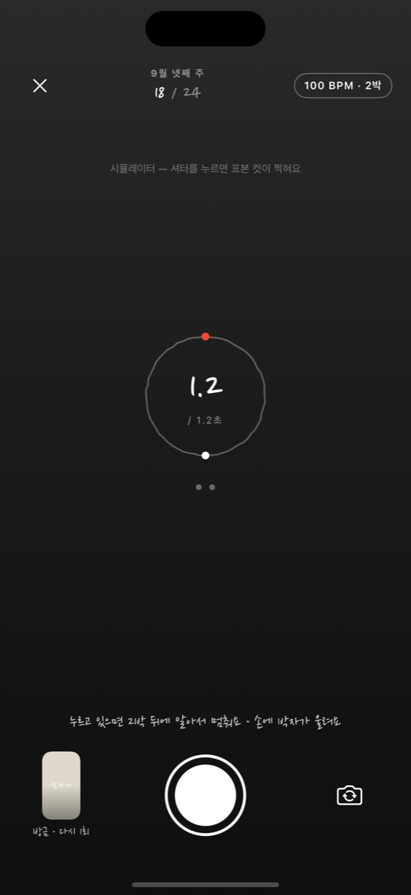
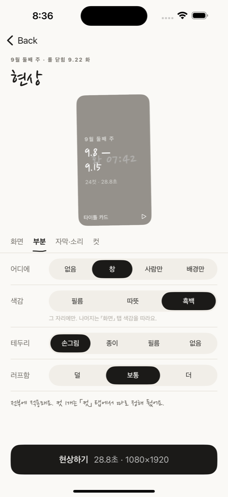
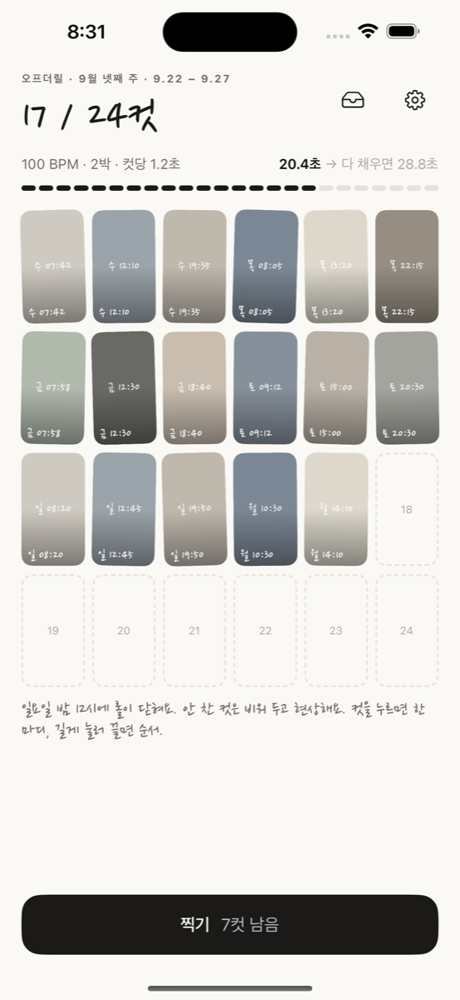
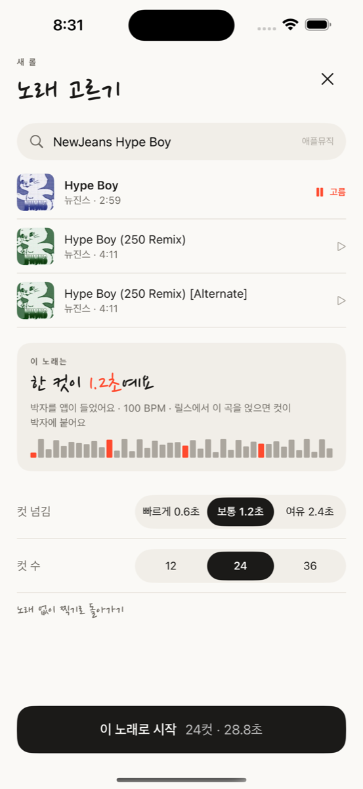
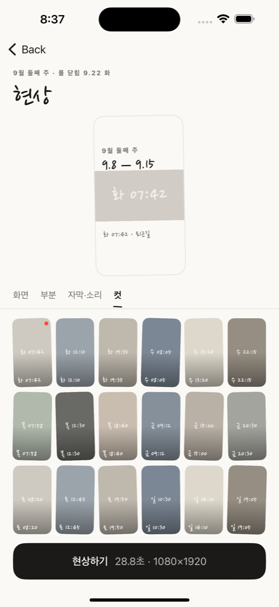
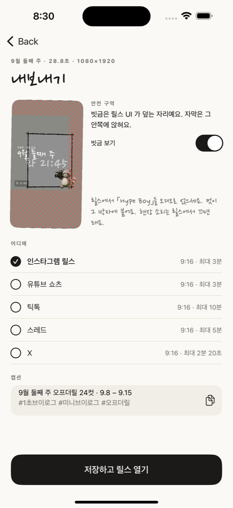
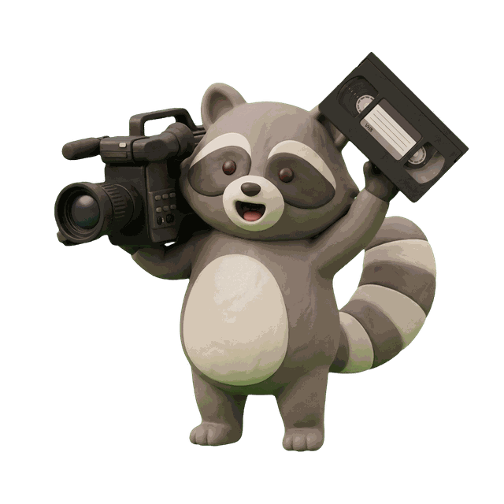

노래를 고르고 셔터를 누르면 딱 그 박자만큼만 찍힙니다. 롤이 차면 영상이 되어 있습니다. 찍고 나서 편집하는 시간이 없습니다.
무료 · 계정 없음 · 서버 없음 · 워터마크 없음
하루 몇 컷씩 찍어 두고, 주말에 편집 앱을 열어 자르고 박자에 맞추고… 세 번째 주에 그만둡니다.
오프더릴은 찍는 순간에 편집을 끝냅니다. 컷 길이가 박자로 정해져 있어서, 이어 붙이면 그대로 음악에 맞습니다.

Apple Music 에서 검색하고 30초를 들어 봅니다. 앱이 박자를 듣습니다. 노래 없이 찍어도 됩니다.
셔터를 누르면 딱 그 박자만큼만 찍힙니다. 12·24·36컷 롤이 찰 때까지, 며칠에 걸쳐도 됩니다.
롤이 닫히면 타이틀·날짜 자막·엔딩 카드가 붙은 영상이 폰 안에서 나옵니다. 릴스 규격 그대로.
색감 넷(원본·필름·따뜻·흑백), 가로 느낌 화면, 컷마다 손글씨 한 마디.
부분 색감 — 창·사람만·배경만 골라 그 자리에만 색감을 입힙니다. 배경만 흑백이면 사람만 컬러로 남습니다. 창에는 손으로 그은 테두리.
고른 노래는 릴스에서 얹으세요. 박자가 맞아 있어 그대로 붙습니다.

타임라인을 끌어 자르는 화면이 없습니다. 컷 길이는 박자가 정하고, 사람은 찍기만 합니다.
12·24·36컷. 차면 닫히고, 닫히면 현상됩니다. 끝없이 쌓이는 클립 서랍이 아닙니다.
계정도 서버도 없습니다. 인터넷은 노래 검색에만 씁니다. 영상은 이용자가 저장할 때만 사진 앱으로 갑니다.
무료이고, 내보낸 영상에 아무것도 찍히지 않습니다.

롤이번 주 컷이 쌓입니다

노래 고르기앱이 박자를 듣습니다
찍기박자만큼만 찍힙니다

현상컷마다 한 마디

내보내기릴스 규격, 바로 넘어갑니다

어깨에 캠코더를 멘 너구리. 롤이 비었을 때, 현상 중일 때, 다 됐을 때 나옵니다. 그 밖의 화면에는 나오지 않습니다 — 찍는 데 방해되니까.
아니요. Apple Music 미리듣기는 박자를 재고 확인하는 데만 씁니다. 영상은 무음 또는 현장 소리로 나오고, 노래는 릴스·쇼츠에서 얹습니다. 박자가 맞아 있어 그대로 붙습니다.
아니요. 검색과 30초 미리듣기는 구독 없이 됩니다.
박자로 정합니다. 「보통」은 2박 — 100 BPM 곡이면 1.2초. 빠르게(1박)·여유(4박)도 있습니다. 노래 없이 찍으면 1.2초.
컷마다 한 번. 컷을 눌러 「다시 찍기」. 순서는 길게 눌러 끌면 바뀝니다.
네. 「사진첩에서 시작」에서 라이브 포토를 고르면 가장 잔잔한 순간을 골라 컷으로 가져옵니다.
어디로도 가지 않습니다. 컷과 현상한 영상은 이 폰 안에만 있고, 내보내기를 눌러야 사진 앱에 저장됩니다. 개인정보 처리방침